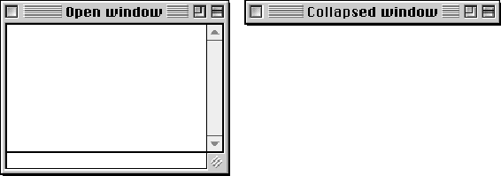

Collapsing a Window
One of the new features of Mac OS 8 is the collapse box, shown in Figure 5-3. When the user clicks the collapse box, the content region of the window disappears, but the title bar remains visible and active. Clicking the collapse box again restores the window to its normal state. Opening and collapsing actions are normally accompanied by a sound, but this can be disabled by the user through the Appearance control panel. Figure 5-6 shows a window in its normal and collapsed states.Figure 5-6 Window in normal and collapsed states

A collapsed window follows standard window conventions; it may be moved, closed, activated, or made inactive. If the user moves the title bar of a collapsed window, the reopened window will display its content region in the new location.
Multiple windows, belonging to one application or several, may be collapsed at the same time. This gives the user great flexibility in arranging and managing a number of windows in a limited screen area. Option-clicking the collapse box of any open window will immediately collapse all open windows. Option-clicking the collapse box of any collapsed window will immediately open all collapsed windows.
The user may choose an additional method of collapsing windows. By setting a checkbox in the Appearance control panel, the user can double-click in the title bar area with the same effect as if the collapse box had been clicked. This option is convenient for users who have become accustomed to the window collapsing method implemented in earlier Mac OS releases. The collapse box still functions if the double-click option is enabled.